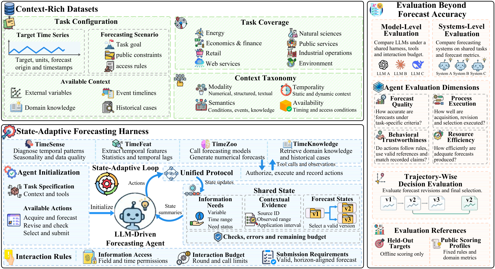
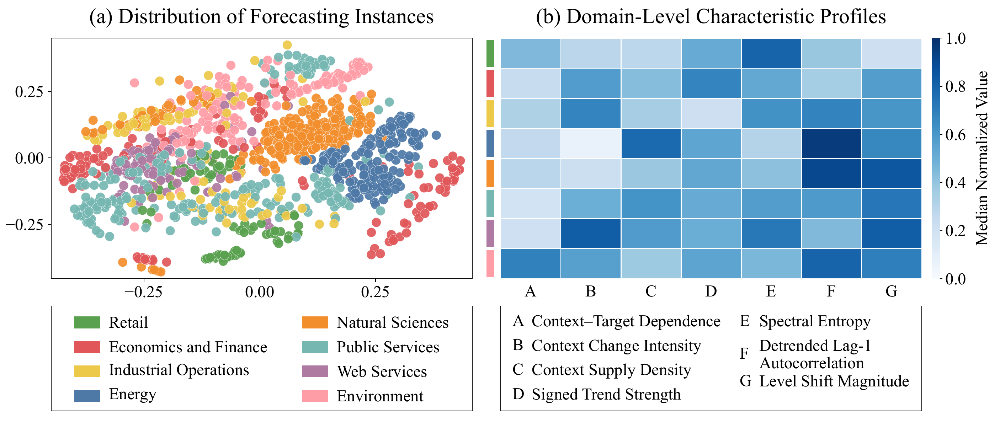

A world of forecasting contexts
25 real-world datasets connect target histories with external variables, events, domain knowledge, and historical cases.
Context-rich tasks. State-adaptive interaction.
Benchmarking Context-Aware Agentic
Time Series Forecasting Beyond Predictive Accuracy
Evaluate how forecasting agents acquire evidence, construct and revise numerical forecasts, select final predictions, and use resources under shared task conditions.
Context-aware agentic forecasting
A / Public: 300 episodes. B / Hidden: 100 episodes. Forecast quality, process execution, behavioral trustworthiness, and resource efficiency.
The benchmark
A forecasting agent must decide what information it needs, which tools to use, whether to revise a prediction, and when to submit. CastWorld makes these decisions observable in a shared, context-aware environment.

25 real-world datasets connect target histories with external variables, events, domain knowledge, and historical cases.
New evidence can guide a revision. An intermediate forecast can reveal what to investigate next. The agent chooses how to proceed.
Model-level evaluation is the primary focus, assessing decisions under a common harness. Systems-level evaluation compares predictive accuracy across methods.
Benchmark results
Evaluation cohort
Evaluation level
CastWorld evaluation results
No matching models or methods.
Beyond the final curve
Total = 0.60 F + 0.20 P + 0.15 T + 0.05 E
Training-scaled predictive errors, with declared domain metrics where applicable.
Recorded acquisition, revision, checking, and selection among created forecasts.
Permission compliance, reference integrity, and agreement between declared and executed changes.
Time, tokens, and redundant behavior, conditioned on predictive adequacy.
The forecasting environment
Evidence can change a forecast. A forecast can reveal what to investigate next. CastWorld records acquisition, forecast, and execution state while the agent chooses its next action.
Information needs, acquired observations, and evidence with sources and time scopes.
Immutable forecast versions, the active prediction, and public check results.
Actions, errors and feedback, remaining budget, and the record of earlier decisions.
Continue acquiring information, create or revise a forecast, inspect a version, return to an earlier prediction, or submit. The shared state informs the choice; the environment does not prescribe a single sequence.
Each accepted construction becomes an immutable forecast version. Numerical changes, supporting observations, checks, and final selection remain connected in the execution record.
An independent scorer uses held-out targets and the recorded trajectory. Public checks guide execution without revealing the current task's future prediction error.
Forecasting-native capabilities
Time series diagnostics.
Understand the current situationStatistical and temporal feature extraction.
Quantify patterns and changesChronos, TimesFM, Sundial, and Moirai forecasts.
Form numerical candidatesDomain knowledge and historical analogue cases.
Ground a forecasting judgmentThe registry provides 49 core tool entries, plus domain-specific diagnostics. Shared forecast operations support construction, fusion, revision, checks, and final submission.
Real-world forecasting
The paper studies 1,310 episodes, including a shared 250-episode comparison of 15 LLMs. The public release provides separate A/B cohorts from the same 25 datasets: 300 episodes with public labels on A and 100 with organizer-held labels on B. Each cohort has independent Model and System boards awaiting evaluation.

Modality, temporality, semantics, and availability describe complementary attributes of context. Task packages organize numerical covariates, event timelines, text knowledge, and historical cases, with explicit field and time permissions.
| Dataset | Domain | Sampling | History | Forecast horizon |
|---|
History and forecast lengths are counts of observations at the listed sampling frequency. Raw CSV and JSON tables.
Run CastWorld
Use the released A/B task packages, common harness, and evaluation code.
Complete usage guidegit clone https://github.com/CastWorld-Bench/CastWorld.git
cd CastWorld
python -m pip install -e .
python -m castbench.cli demo --out runs/demo